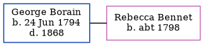

George Borain, the husband of Rebecca Bennet (the four times great-aunt of Nigel Horne), was born in Wickhambreaux, Kent, England on Jun 24, 1794. He married Rebecca in Wickhambreaux on Apr 27, 18181. In 1818, he lived in Canterbury, Kent, England2.
He died in 1868 in Pietermaritzburg, KwaZulu-Natal, South Africa.
Citations
England, Select Marriages, 1538–1973 Ancestry.com Operations, Inc.
UK, Poll Books and Electoral Registers, 1538-1893 Online publication - Provo, UT, USA: Ancestry.com Operations, Inc., 2012.Original data - London, England, UK and London Poll Books. London, England: London Metropolitan Archives and Guildhall Library.Original data: London, England, UK and London Poll Books
Family Tree

Interactive Map
Map
Generated by ged2site. Last updated on Feb 18, 2025